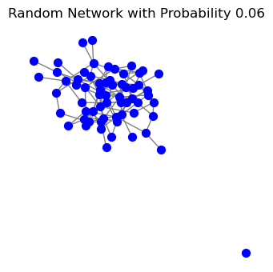

3. Introduction to basic models#
import os
import dgl
import logging
import torch
import networkx as nx
import matplotlib.pyplot as plt
import random
import requests
from IPython.display import HTML
from IPython.display import Image
from IPython.display import Markdown, display
def get_code(raw_url, start_line=None, end_line=None):
"""
Fetches raw code from a GitHub repository and returns a snippet of it with improved formatting.
:param raw_url: The URL to the raw content of the file on GitHub.
:param start_line: The starting line number (inclusive).
:param end_line: The ending line number (inclusive).
:return: The raw code snippet as a formatted string or an error message.
"""
response = requests.get(raw_url)
# Check if the request was successful
if response.status_code != 200:
return f"Failed to retrieve code. Status code: {response.status_code}. URL may be incorrect or redirected."
# Check if we received HTML instead of raw text (indicating a redirect or wrong URL)
if "<html>" in response.text.lower():
return "Error: Received HTML content. Please check the URL, it might not be the raw file."
# Split the response into lines and extract the snippet
code_lines = response.text.splitlines()
# Handle specific line range requests
if start_line is None:
start_line = 1
if end_line is None:
end_line = len(code_lines)
# Adjust for 1-based indexing
code_snippet = "\n".join(code_lines[start_line-1:end_line])
# Return the formatted code snippet
return code_snippet
CLASS INHERITANCE EXPLAINED
Classes are blueprints for creating objects
#Create a class
class Students():
pass
#create an instance of the class -- individual member of the class
student_1 = Students()
The init() method – also known as constructor or initializer – receives ‘self’ as a default first argument, followed by other arguments. These arguments denote the content of class attributes. Defining an initializer is the first essential step when creating a class
class Students():
def __init__(self, first, last, grade):
self.first = first
self.last = last
self.grade = grade
def fullname(self):
return (f'{self.first} {self.last}')
student_1 = Students("anna", "johnson", 76)
student_1.first
'anna'
student_1.fullname()
'anna johnson'
INHERITANCE – allows a class to inherit attributes and methods from a parent class – useful because by creating subclassess we can modify and override methods and attributes of parent class without modifying the parent class directly
class HistoryStudents(Students): #creating a subclass of history students which is a subset of all the students
pass
student_2 = HistoryStudents("martha", "wilde", 82)
student_2.fullname()
'martha wilde'
We can see how the class HistoryStudents automatically inherited attributes first, last and grade and the method fullname() from the parent class
Now, let’s see how inheritance works by modifying the fullname() method
class HistoryStudents(Students):
def __init__(self, first, last, grade):
super().__init__(first, last, grade)
def fullname(self):
return (f'{self.last} {self.first}') #changing fullname method to display surname first
#we can call self.last and self.first
#without defining them in the initializer thanks to inheritance!
student_1.fullname()
'anna johnson'
student_1 = HistoryStudents("anna", "johnson", 76)
student_1.fullname()
'johnson anna'
POLYGRAPHS CODE STRUCTURE
Polygraphs operations are used to specify nodes and edges attributes. They are derived from the basic class PolygraphsOp and divided into common operations and complex operations
Common operations include: BalaGoyalOp and OConnorandWeatherhallOp
Complex operations include: GullibleBinomialOp, GullibleNegativeEps, AlignedBinomialOp, AlignedNegativeEpsOp
All Polygraphs operations follow the same logic:

Initialize –> init()
Experiment –> experiment()
Filter –> filterfn()
Send –> messagefn()
Reduce –> reducefn()
Update –> applyfn()
All polygraphs operations inherit from the base class PolygraphOp which can be found in the ops.core.py module
snippet = get_code("https://raw.githubusercontent.com/alexandroskoliousis/polygraphs/main/polygraphs/ops/core.py", start_line = 11, end_line = 15)
display(Markdown(f'```python\n{snippet}\n```'))
class PolyGraphOp(torch.nn.Module, metaclass=abc.ABCMeta):
"""
Base operator from which all other operators are derived.
"""
The bulk of the init and experiment() method are defined in the PolygraphOp
snippet = get_code("https://raw.githubusercontent.com/alexandroskoliousis/polygraphs/main/polygraphs/ops/core.py", start_line = 16, end_line = 42)
display(Markdown(f'```python\n{snippet}\n```'))
def __init__(self, graph, params):
super().__init__()
# Set device for experimentation
self._device = params.device
# The shape of all node attributes
size = (graph.num_nodes(),)
# Node beliefs that action B is better
graph.ndata["beliefs"] = init.init(size, params.init).to(device=self._device)
# Action B yields Bernoulli payoff of 1 (success) with probability p (= 0.5 + e)
probs = init.halfs(size) + params.epsilon
# Number of Bernoulli trials
count = init.zeros(size) + params.trials
# Each node gets a private signal that provides information
# about whether action B is indeed a good action
self._sampler = torch.distributions.binomial.Binomial(
total_count=count, probs=probs
)
# Store action B's probability of success as a graph node attribute
graph.ndata["logits"] = self._sampler.logits.to(device=self._device)
snippet = get_code("https://raw.githubusercontent.com/alexandroskoliousis/polygraphs/main/polygraphs/ops/core.py", start_line = 43, end_line = 48)
display(Markdown(f'```python\n{snippet}\n```'))
def sample(self):
"""
Draws a sample from the binomial distribution.
"""
return self._sampler.sample()
snippet = get_code("https://raw.githubusercontent.com/alexandroskoliousis/polygraphs/main/polygraphs/ops/core.py", start_line = 55, end_line = 70)
display(Markdown(f'```python\n{snippet}\n```'))
def experiment(self, graph):
"""
Simulates an "experiment", where nodes who believe action B is better independently
observe the payoffs from following action B by sampling a binomial distribution.
"""
# Consider only nodes who believe action B is better
mask = graph.ndata["beliefs"] > 0.5
# Repeat mask
mask = mask.tile((2, 1))
# Sample distribution (a node observes only a few successful trials out of all trials)
result = torch.stack((self.sample(), self.trials())).to(device=self._device)
# Apply mask
result = result * mask
# Store per-node payoffs as a graph node attribute
graph.ndata["payoffs"] = result.T
RELIABLE NETWORKS
Reliable networks follow a BalaGoyalOp which is defined as a subclass of PolygraphOp and therefore inherits the baseclass methods and attributes
snippet = get_code("https://raw.githubusercontent.com/alexandroskoliousis/polygraphs/main/polygraphs/ops/common.py", start_line = 40, end_line = 44)
display(Markdown(f'```python\n{snippet}\n```'))
class BalaGoyalOp(core.PolyGraphOp):
"""
Learning from neighbours (Bala & Goyal, 1998)
"""
Some reliable networks follow the OConnorandWeaterhallOp, which is defined as a subclass of BalaGoyalOp
OConnorandWeaterhallOp modifies INIT() by adding two parameters: MISTRUST and ANTIUPDATING
snippet = get_code("https://raw.githubusercontent.com/alexandroskoliousis/polygraphs/main/polygraphs/ops/common.py", start_line = 105, end_line = 113)
display(Markdown(f'```python\n{snippet}\n```'))
def __init__(self, graph, params):
super().__init__(graph, params)
# Multiplier that captures how quickly agents become uncertain about
# the evidence of their peers as their beliefs diverge.
self.mistrust = params.mistrust
# Whether to discount evidence with unti-updating or not
self.antiupdating = params.antiupdating
Additionaly, it modifies REDUCE() by adding a parameter, delta, specifying the distance between an agent’s belief and its i-th neigbor belief
snippet = get_code("https://raw.githubusercontent.com/alexandroskoliousis/polygraphs/main/polygraphs/ops/common.py", start_line = 166, end_line = 166)
display(Markdown(f'```python\n{snippet}\n```'))
delta = torch.abs(prior - nodes.mailbox["beliefs"][:, i])
Then, depending on wether antiupdating is set or not, the function computes certainty, i.e. the belief that evidence provided by i-th neighbor is real, differently:
snippet = get_code("https://raw.githubusercontent.com/alexandroskoliousis/polygraphs/main/polygraphs/ops/common.py", start_line = 146, end_line = 190)
display(Markdown(f'```python\n{snippet}\n```'))
def function(nodes):
# Log probability of successful trials
logits = nodes.data["logits"]
# Prior, P(H) (aka. belief)
prior = nodes.data["beliefs"]
# Number of nodes and number of neighbours per node (incoming messages)
_, neighbours = nodes.mailbox["beliefs"].shape
for i in range(neighbours):
# A node receives evidence E from its i-th neighbour, say Jill,
# denoting the number of successful trials and the total number
# of trials she observed
values = nodes.mailbox["payoffs"][:, i, 0]
trials = nodes.mailbox["payoffs"][:, i, 1]
# Evidence, E
evidence = math.Evidence(logits, values, trials)
# The difference in belief between an agent
# and its i-th neighbour
delta = torch.abs(prior - nodes.mailbox["beliefs"][:, i])
# Compute belief that the evidence E is real, P(E)(d)
if self.antiupdating:
certainty = torch.max(
1.0
- self._distancefn(delta)
* (1.0 - math.marginal(prior, evidence)),
torch.zeros((len(nodes),)),
)
else:
# Consider an agent u and one of its neighbours, v. As
# beliefs between u and v diverge (delta towards 1),
# agent u simply ignores the evidence of agent v.
#
# If delta becomes 1, uncertainty ~ marginal. In other
# words, agent u's belief remains unchanged in light of
# agent v's evidence.
#
# The multiplier simply determines how far apart beliefs
# have to become before agent u begins to ignore the
# evidence of its neighbour, v (since delta never becomes 1)
certainty = 1.0 - torch.min(
torch.ones((len(nodes),)), self._distancefn(delta)
) * (1.0 - math.marginal(prior, evidence))
Lastly, this operation uses Jeffrey’s rule to update agents beliefs
snippet = get_code("https://raw.githubusercontent.com/alexandroskoliousis/polygraphs/main/polygraphs/ops/common.py", start_line = 192, end_line = 196)
display(Markdown(f'```python\n{snippet}\n```'))
# Compute posterior belief, in light of soft uncertainty
posterior = math.jeffrey(prior, evidence, certainty)
# Consider next neighbour
prior = posterior
UNRELIABLE NETWORKS
Unreliable Network follow an Unreliable Op which inherits from the BalaGoyalOp and modifies some aspects of it.
It modifies INIT() by adding a RELIABILITY parameter
snippet = get_code("https://raw.githubusercontent.com/alexandroskoliousis/polygraphs/main/polygraphs/ops/complex.py", start_line = 30, end_line = 44)
display(Markdown(f'```python\n{snippet}\n```'))
# Store the reliability parameter
self._network_reliability = params.reliability
# Configure network reliability
# Draw binary numbers from a Bernoulli distribution
# (1s denote reliable nodes)
self._reliability = torch.bernoulli(torch.ones(self._size) * params.reliability)
# Given a list of unreliable nodes, make them unreliable
for node in params.unreliablenodes:
self._reliability[node] = 0
# Store network reliability
graph.ndata["reliability"] = self._reliability.to(device=self._device)
It modifies SAMPLE() by adding an Unreliable Sampler parameter
snippet = get_code("https://raw.githubusercontent.com/alexandroskoliousis/polygraphs/main/polygraphs/ops/complex.py", start_line = 49, end_line = 61)
display(Markdown(f'```python\n{snippet}\n```'))
def sample(self):
"""
Draws a sample from a reliable and unreliable sample
for reliable and unreliable nodes
"""
# pylint: disable=invalid-name
# Sample reliable distribution
b = self._sampler.sample()
# Sample unreliable distribution
u = self._unreliable_sampler.sample()
# Combine samples
return b * self._reliability + u * (1 - self._reliability)
Unreliable ops are divided 4 ways, based on wether:
The distribution from which the unreliable sampler is drawn is…:
A) Binomial based on P(B) = 0.5
B) Binomial based on P(B) = 0.5 - ε
Wether agents are fully trusting of the received evidence
A) Yes. Agents are gullible
B) No. Agents are aligned: they trust the evidence to a level that matches reliability, e.g. if reliability = 0.75, each egent trusts the evidence 75% of the way
Possible combinations :
1AA = GullibleBinomialOp
1AB = AlignedBinomialOp
1BA = GullibleNegEpsOp
1BB = AlignedNegEpsOp
Gullible operations (1AA and 1BA) only modify INIT() by specifying the content of the unreliable sampler
For GullibleBinomialOP:
snippet = get_code("https://raw.githubusercontent.com/alexandroskoliousis/polygraphs/main/polygraphs/ops/complex.py", start_line = 110, end_line = 124)
display(Markdown(f'```python\n{snippet}\n```'))
def __init__(self, graph, params):
super().__init__(graph, params)
# Unreliable Binomial Sampler:
# Payoff: p = 0.5, epsilon = 0
probs = init.halfs(self._size)
# Number of Bernoulli trials
count = init.zeros(self._size) + params.trials
# Each node gets a private signal that provides information
# about whether action B is indeed a good action
self._unreliable_sampler = torch.distributions.binomial.Binomial(
total_count=count, probs=probs
)
For GullibleNegEpsOp:
snippet = get_code("https://raw.githubusercontent.com/alexandroskoliousis/polygraphs/main/polygraphs/ops/complex.py", start_line = 132, end_line = 145)
display(Markdown(f'```python\n{snippet}\n```'))
def __init__(self, graph, params):
super().__init__(graph, params)
# Unreliable Binomial Sampler with a negative epsilon
probs = init.halfs(self._size) - params.epsilon
# Number of Bernoulli trials
count = init.zeros(self._size) + params.trials
# Each node gets a private signal that provides information
# about whether action B is indeed a good action
self._unreliable_sampler = torch.distributions.binomial.Binomial(
total_count=count, probs=probs
)
Aligned ops modify the reduce function (why not the apply func?) and use Jeffreys rule
snippet = get_code("https://raw.githubusercontent.com/alexandroskoliousis/polygraphs/main/polygraphs/ops/complex.py", start_line = 180, end_line = 219)
display(Markdown(f'```python\n{snippet}\n```'))
def reducefn(self):
"""
Reduce function
"""
def function(nodes):
# Log probability of successful trials
logits = nodes.data["logits"]
# Prior, P(H) (aka. belief)
prior = nodes.data["beliefs"]
# Number of nodes and number of neighbours per node (incoming messages)
_, neighbours = nodes.mailbox["reliability"].shape
for i in range(neighbours):
# A node receives evidence E from its i-th neighbour, say Jill,
# denoting the number of successful trials and the total number
# of trials she observed
values = nodes.mailbox["payoffs"][:, i, 0]
trials = nodes.mailbox["payoffs"][:, i, 1]
# Evidence, E
evidence = math.Evidence(logits, values, trials)
# Get i-th neighbour reliability
reliability = nodes.mailbox["reliability"][:, i]
# log.info(f"Neighbour {i:2d}: reliability {reliability}")
# Compute posterior belief, in light of soft uncertainty
# (i.e., network unreliability)
posterior = math.jeffrey(prior, evidence, reliability)
# Consider next neighbour
prior = posterior
# Return posterior beliefs for each neighbour
return {"beliefs": posterior}
return function
3.1. Run simulations#
Polygraphs allows us to run simulations on different networks with different parameters
BASIC CONFIGURATIONS
Here is a list of some default configuration values for our simulations.
op : ops. BalaGoyalOp, ops.UnreliableNetworkBasicGullibleBinomialOp, ops.UnreliableNetworkBasicGullibleNegativeEpsOp, ops.UnreliableNetworkBasicAlignedBinomialOp, ops.UnreliableNetworkBasicAlignedNegativeEpsOp, ops.OConnorWeatherallOp
params.network.kind : ‘complete’, ‘star’, ‘cycle’, ‘karate’, ‘barabasialbert’, ‘wattsstrogatz’, ‘random’
params.network.size : 16, 32, 64
params.epsilon : 0.01, 0.001
params.reliability : 0.75, 0.50, 0.25
Additionally…
If you selected BARABASIALBERT as network.kind
params.network.barabasialbert.attachments : 1, 2, 4, 8, 16, 24, 32
If you selected WATTSSTROGATZ as network.kind
params.network.wattsstrogatz.knn : 1, 2, 4, 8, 16, 32
params.network.wattsstrogatz.probability : 0, 0.2, 0.25, 0.4, 0.5, 0.75, 0.8, 1
If you selected RANDOM as network.kind
params.network.random.probability : 0.03, 0.06, 0.12, 0.24, 0.38, 0.51
Here is 64 node random network with a rewiring probability of 0.06
# Parameters
num_nodes = 64 # Number of nodes in the network
rewire_prob = 0.06 # Probability of edge creation
# Generate a random graph using the Erdős-Rényi model
random_network = nx.erdos_renyi_graph(num_nodes, rewire_prob)
# Draw the network
plt.figure(figsize=(3, 3))
nx.draw(random_network, node_size=50, with_labels=False, node_color="blue", edge_color="gray")
plt.title("Random Network with Probability 0.06")
plt.show()
random_network = nx.erdos_renyi_graph(num_nodes, rewire_prob)

#import relevant modules
import polygraphs as pg
from polygraphs import hyperparameters as hparams
from polygraphs import ops
# Create a PolyGraph configuration
params = hparams.PolyGraphHyperParameters()
# Initial beliefs are random uniform between 0 and 1
params.init.kind = 'uniform'
# Chance that action B is better than action A
params.epsilon = 0.01
# Kind and size of network (a complete network with 10 agents)
params.network.kind = 'complete'
params.network.size = 16
# Enable logging; print progress every 100 steps
params.logging.enabled = True
params.logging.interval = 100
# Run 1,000 steps per simulation; repeat simulation 10 times
params.simulation.steps = 1000
params.simulation.repeats = 10
params.antiupdating = True
params.mistrust = 1
# Set seed
params.seed = 123456789
pg.random(params.seed)
_ = pg.simulate(params, op=ops.OConnorWeatherallOp)
print('Bye.')
[MON] step 0001 Ksteps/s 0.00 A/B 0.56/0.44
[MON] step 0099 Ksteps/s 0.16 A/B 0.00/1.00
INFO polygraphs> Sim #0001: 99 steps 0.62s; action: B undefined: 0 converged: 1 polarized: 0
[MON] step 0001 Ksteps/s 0.00 A/B 0.75/0.25
[MON] step 0100 Ksteps/s 0.17 A/B 0.00/1.00
[MON] step 0129 Ksteps/s 0.16 A/B 0.00/1.00
INFO polygraphs> Sim #0002: 129 steps 0.79s; action: B undefined: 0 converged: 1 polarized: 0
[MON] step 0001 Ksteps/s 0.00 A/B 0.44/0.56
[MON] step 0100 Ksteps/s 0.17 A/B 0.06/0.94
[MON] step 0154 Ksteps/s 0.16 A/B 0.00/1.00
INFO polygraphs> Sim #0003: 154 steps 0.97s; action: B undefined: 0 converged: 1 polarized: 0
[MON] step 0001 Ksteps/s 0.00 A/B 0.38/0.62
[MON] step 0100 Ksteps/s 0.17 A/B 0.06/0.94
[MON] step 0200 Ksteps/s 0.16 A/B 0.12/0.88
[MON] step 0233 Ksteps/s 0.16 A/B 0.00/1.00
INFO polygraphs> Sim #0004: 233 steps 1.45s; action: B undefined: 0 converged: 1 polarized: 0
[MON] step 0001 Ksteps/s 0.00 A/B 0.62/0.38
[MON] step 0100 Ksteps/s 0.32 A/B 0.62/0.38
[MON] step 0200 Ksteps/s 0.39 A/B 0.88/0.12
[MON] step 0300 Ksteps/s 0.44 A/B 0.88/0.12
[MON] step 0380 Ksteps/s 0.37 A/B 0.00/1.00
INFO polygraphs> Sim #0005: 380 steps 1.02s; action: B undefined: 0 converged: 1 polarized: 0
[MON] step 0001 Ksteps/s 0.00 A/B 0.75/0.25
[MON] step 0100 Ksteps/s 0.46 A/B 0.88/0.12
[MON] step 0200 Ksteps/s 0.32 A/B 0.31/0.69
[MON] step 0300 Ksteps/s 0.25 A/B 0.00/1.00
[MON] step 0339 Ksteps/s 0.22 A/B 0.00/1.00
INFO polygraphs> Sim #0006: 339 steps 1.51s; action: B undefined: 0 converged: 1 polarized: 0
[MON] step 0001 Ksteps/s 0.00 A/B 0.81/0.19
[MON] step 0100 Ksteps/s 0.19 A/B 0.06/0.94
[MON] step 0193 Ksteps/s 0.16 A/B 0.00/1.00
INFO polygraphs> Sim #0007: 193 steps 1.21s; action: B undefined: 0 converged: 1 polarized: 0
[MON] step 0001 Ksteps/s 0.00 A/B 0.31/0.69
[MON] step 0080 Ksteps/s 0.48 A/B 1.00/0.00
INFO polygraphs> Sim #0008: 80 steps 0.17s; action: A undefined: 0 converged: 1 polarized: 0
[MON] step 0001 Ksteps/s 0.00 A/B 0.50/0.50
[MON] step 0100 Ksteps/s 0.15 A/B 0.00/1.00
[MON] step 0147 Ksteps/s 0.15 A/B 0.00/1.00
INFO polygraphs> Sim #0009: 147 steps 1.00s; action: B undefined: 0 converged: 1 polarized: 0
[MON] step 0001 Ksteps/s 0.00 A/B 0.38/0.62
[MON] step 0053 Ksteps/s 0.16 A/B 0.00/1.00
INFO polygraphs> Sim #0010: 53 steps 0.33s; action: B undefined: 0 converged: 1 polarized: 0
Bye.
TRY IT OUT!
Now it’s your turn. Run a simulation on a network of size 32 with the AlignedBinomial Op. You can select your preferred network. kind alongside the other parameters
3.2. Write a new custom operation#
TRY IT OUT!
How would you write a new operation? Assuming that you want to write an operation that introduces fact-checkers in the networks and influences node behavior in the following way:
Nodes are divided in 3 groups: fact-checkers, misinformants, users (A) (+)
If a fact-checker is part of a triangle fact-checker-misinformant-user, the edge misinformant-user is deactivated (B) (+)
Agents are fully trusting (C)
What class would you use as base-class?
REMINDER: our new fact-checkers class will inherit attribute and methods form the specified base-class. The goal is having to write as less code as possible
a) PolygraphsOp
b) BalaGoyalOp
c) UnreliableOp
d) UnreliableNetworkBasicGullibleUniformOp
e) UnreliableNetworkBasicGullibleNegEpsOp
f) UnreliableNetworkBasicAlignedBinomialOp
g) UnreliableNetworkBasicAlignedNegEpsOp
Where would you need to modify the code to achieve A?
a) init() b) sample() c) experiment() d) filter() e) apply()
Where would you need to modify the code to achieve B?
a) init() b) sample() c) experiment() d) filter() e) apply()
from polygraphs.ops.complex import UnreliableNetworkBasicGullibleBinomialOp
class FactCheckersOp(ops.complex.UnreliableNetworkBasicGullibleBinomialOp):
"""
FactCheckers operator for moderating unreliable nodes.
"""
def __init__(self, graph, params):
# Call the base class's initializer first to set up everything needed
super().__init__(graph, params)
# Define the group labels (Fact-checkers, Unreliable, Users)
self.group_labels = {0: "Fact-checkers", 1: "Unreliable", 2: "Users"}
# Probabilities for group assignment: Fact-checkers (2), Unreliable (3), Users (7)
weights = torch.tensor([1, 5, 7], dtype=torch.float)
# Assign nodes to groups based on probabilities
group_assignments = torch.multinomial(weights, graph.num_nodes(), replacement=True)
# Assign the group data to nodes
graph.ndata['group'] = group_assignments.to(self._device)
# Set reliability: Fact-checkers (group 0) and Users (group 2) are reliable by default
reliability = torch.ones(graph.num_nodes(), dtype=torch.float)
reliability[group_assignments == 1] = 0 # Unreliable nodes (group 1) get reliability of 0
# Now assign the reliability to the graph
graph.ndata["reliability"] = reliability.to(params.device)
# Count the number of nodes in each group
fact_checkers_count = torch.sum(group_assignments == 0).item()
unreliable_count = torch.sum(group_assignments == 1).item()
users_count = torch.sum(group_assignments == 2).item()
# Print out the counts
print(f"Number of Fact-checkers: {fact_checkers_count}")
print(f"Number of Unreliable nodes: {unreliable_count}")
print(f"Number of Users: {users_count}")
def filterfn(self):
"""Filters out edges between Unreliable and Users when a Fact-checker is connected to the Unreliable node."""
def function(edges):
src_group = edges.src['group']
dst_group = edges.dst['group']
# Fact-checkers (group 0), Unreliable (group 1), Users (group 2)
fact_checker_group = 0
misinformant_group = 1
user_group = 2
# Determine if a fact-checker is connected to the Unreliable node (src or dst)
fact_checker_connected_to_misinformant = (
(src_group == fact_checker_group) & (dst_group == misinformant_group)) | \
((src_group == misinformant_group) & (dst_group == fact_checker_group))
# Determine if an edge is between an Unreliable node and a User
misinformant_user_edge = ((src_group == misinformant_group) & (dst_group == user_group)) | \
((src_group == user_group) & (dst_group == misinformant_group))
# Determine if an edge is between a User and Fact-checker
fact_checker_user_edge = ((src_group == fact_checker_group) & (dst_group == user_group)) | \
((src_group == user_group) & (dst_group == fact_checker_group))
# Block edges between Unreliable and Users when a Fact-checker is connected to the Unreliable node
block_edge = misinformant_user_edge & fact_checker_connected_to_misinformant
# Allow all other edges
allow_edge = ~block_edge
return allow_edge
return function
Run simulations on new operation
# Create a PolyGraph configuration
params = hparams.PolyGraphHyperParameters()
# Initial beliefs are random uniform between 0 and 1
params.init.kind = 'uniform'
# Chance that action B is better than action A
params.epsilon = 0.01
# Kind and size of network (a complete network with 10 agents)
params.network.kind = 'star'
params.network.size = 32
# Enable logging; print progress every 100 steps
params.logging.enabled = True
params.logging.interval = 100
params.mistrust = 1.5
# Run 1,000 steps per simulation; repeat simulation 10 times
params.simulation.steps = 1000
params.simulation.repeats = 3
pg.random(params.seed)
# Run simulation
_ = pg.simulate(params, op=FactCheckersOp) #insert the new operation
print('Bye.')